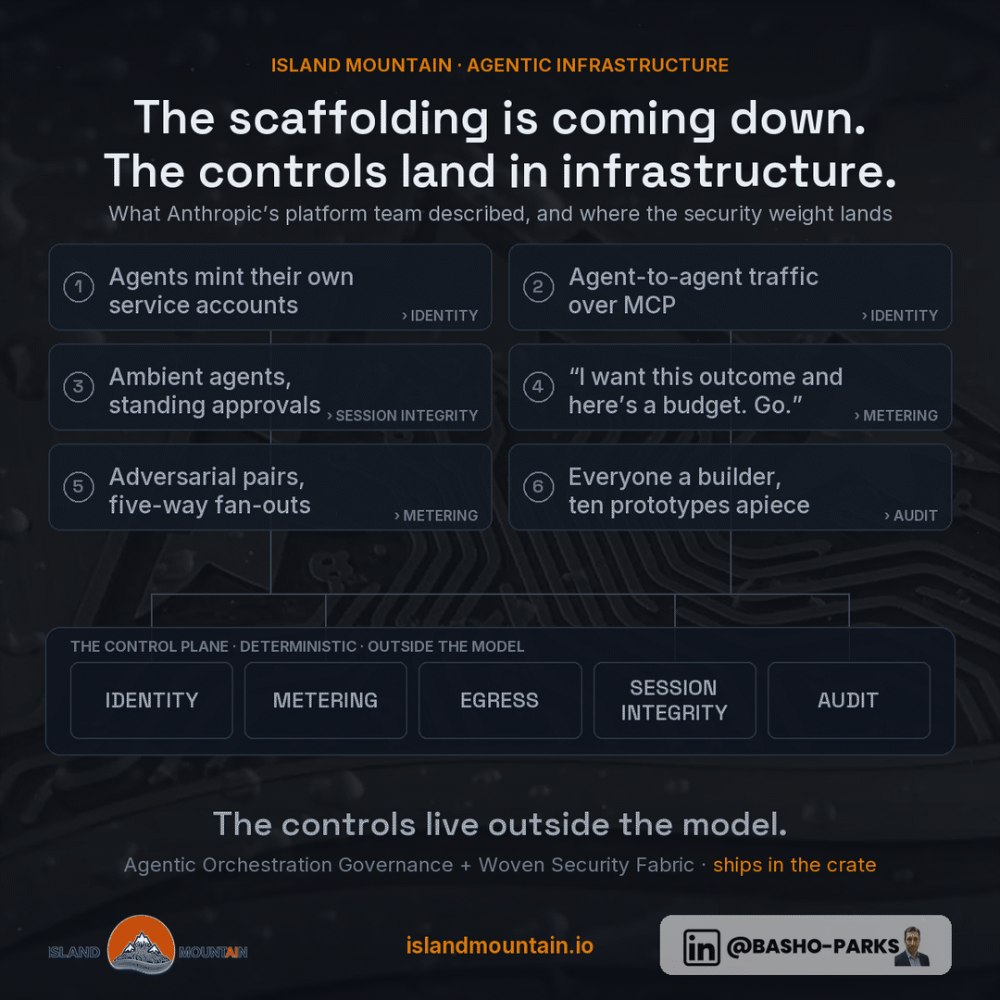

The People Building the Platform Just Handed You the Blueprint
Anthropic's Claude Platform team sat down on camera to walk through where agentic infrastructure is headed, and you should watch it twice. Once for the pitch: agents with their own identities, agents calling other agents, scaffolding getting thinner, work you hand off as an outcome with a budget stapled to it. Then watch it again and count the security controls. Every convenience on that list quietly picks a control up off the application-code floor and reburies it in the infrastructure underneath. That's not a knock on them. It's a blueprint. When the folks building the platform tell you where they're taking it, they're also telling you, without quite meaning to, where the load-bearing wall of your next architecture is going to sit. Read it like an inspector, not a fan.
Their own framing sets it up. Six months ago the platform was an API that sold you inference and tokens, and that was the whole relationship. What they're excited about now takes the infrastructure and the scaffolding off your plate: managed agents, memory, outcomes with rubrics and iteration caps. Fine. Useful, even. But be clear about the direction of travel, because it runs one way only. The agent stack is sliding down and out of your codebase and into theirs.

Six Things They Said, and What Each One Costs You
1. Agents get their own identities. Their sketch: you hand an agent an outcome, it comes back and says it needs A, B, C, and D to pull it off, you bless A through C and tell it to keep its hands off D, and it spins itself up a service account and goes to work. From then on you can audit it like any other actor on the network. Good. Hold that thought, because "any other actor on the network" is carrying a lot of weight in that sentence.
2. Agents talk to agents. People are already wrapping a managed agent in a thin MCP server so any other agent can call it the way a person would. Which means agent-to-agent chatter stops being a slide in a keynote and becomes ordinary traffic on somebody's network, carrying somebody's data, between two things nobody interviewed.
3. The scaffolding comes down. Until recently you had to box a model inside an elaborate flowchart of business process, step A then step B but only if the moon is full, because the model's nondeterminism was a liability you engineered around. The models got good enough that the flowchart is dead weight, so it's getting deleted. The trend line points at thinner, then thinner still. No argument here. The flowchart was miserable and nobody will miss it.
4. Strategy replaces the flowchart. What fills the space isn't nothing. It's agents racing each other at the same problem, a generator with an adversarial critic riding shotgun, an advisor pattern where a stuck agent phones a smarter model for a hint. Fan out, judge the field, iterate on the winner. The structure around the model stops encoding your process and starts encoding a search. Genuinely clever. It also, as we'll get to, multiplies the bill.
5. Agents go ambient, then go unprompted. The plumbing now exists for an agent to just live in a workspace, wake up when something pokes it, run for however long the job takes, and come back when it's done. And the future they paint goes a step past that: the agent notices a service fell over, diagnoses it, fixes it, and walks up holding the pull request. Then comes the line that should stop you cold, and they deliver it as a feature: maybe you tell it that next time, for something this small, don't bother you, just ship it. Sit with that one.
6. It all compresses to an outcome and a budget. The whole arc collapses into a single sentence from the conversation: "I want this outcome and here's a budget. Go." Remember that word, budget. We'll come back to it, because on somebody else's meter it's the scariest word in the sentence.
They Named the Wall, Too
Asked why some shops are watching their ceiling lift while others feel nothing, neither speaker blamed the model. First answer: security and compliance guardrails. Second: evals. And the diagnosis was dead on, which is the part I want to flag, because you don't hear it from a vendor often. Most enterprise security postures were drawn up twenty years ago for a building full of humans with logins and human-speed judgment, and agents shred every assumption underneath them. We've been saying this from the other side of the table for a year: an agent with credentials isn't a chatbot, it's an actor on your network. The novelty is hearing the platform vendor say it out loud.
Put the roadmap and the confession side by side and they turn out to be the same sentence written twice. Every feature they're proud of is either a new control surface or a fresh reason you need one. Usually both.
Killing the Scaffolding Doesn't Kill the Control
Here's the part that matters if your name is on the risk. That old scaffolding was doing two jobs at once, and until now nobody had to pull them apart. Job one was capability, the flowchart keeping a dim model on the rails. Job two was control, because that same flowchart was frequently the only thing deciding what the system was allowed to touch in the first place. Better models retired job one, and the platform team is right to dance on its grave. Nobody should mourn the flowchart.
But job two was never the flowchart's to hold, and here's where I part ways with the celebration. Anything that lives in prompt logic, the workflow graph, the standard operating procedure you pasted into context, the system prompt itself, is a polite suggestion the instant a model can be sweet-talked out of it, and models can be sweet-talked out of things. That's the whole definition of prompt injection. The controls that actually hold are deterministic and they live outside the model, which is the entire argument of our agentic orchestration and security map: a system prompt is a request, a sandbox is a fact.
So when the scaffolding thins, the controls don't evaporate. They fall down the stack, out of application code and into infrastructure, and they land on five things. Identity. Metering. Egress. Session integrity. Audit. Walk back through those six shiny signals and watch every one of them come to rest on that same short list.
| What they described | Where the weight lands |
|---|---|
| An agent that mints its own service account | Per-agent identity: least privilege, scoped short-lived credentials, and revocation that actually propagates instead of lingering |
| Agents calling agents through thin MCP fronts | Mutual auth on every hop, because your data is now moving between actors nobody hired |
| Ambient agents holding standing approvals | Session integrity and a kill switch; a standing "just ship it" is precisely the authority agentjacking is dying to inherit |
| Outcome plus budget | Metering enforced outside the model: tokens, dollars, iterations, wall-clock, all of it |
| Racing agents and adversarial pairs | Hard ceilings and real capacity planning, because a composite strategy multiplies your token bill by the size of the field |
| Everyone a builder, ten prototypes each | Inventory and an audit ledger: which agents exist, whose credentials they carry, what they touched |
They said the load-bearing part themselves, and cheerfully: once the agent has its own service account, you can audit it. Correct. Which means the identity layer, the metering layer, and the audit ledger are the product now, not the model. None of it lives in the model. All of it lives under the model. Even their ROI advice rhymes with this, measure the individual first, then the team, then the whole process, because you can't measure agent work you don't meter, and the meter, say it with me, is infrastructure too.
Now Run It Under Regulated Conditions
On a managed platform every control in that table exists, and it exists inside the vendor's fence. For most of the market that's the right call, the same way managed Kubernetes is the right call for most teams, and I'm not going to pretend otherwise. The invisible-substrate future they describe, agents you spin up and tear down like browser tabs, wandering in with finished pull requests, is going to be a genuinely good time for anyone whose data is allowed to live in someone else's building.
Now run the identical future in a building where the data isn't allowed to leave. Agent memory, the feature customers reportedly love most, is a filing cabinet that fills up with whatever the agent touches. At a law firm that cabinet holds privileged case strategy, and privilege depends entirely on who can reach it. At a medical practice it fills with PHI, and HIPAA's access and audit duties attach wherever it sits, not wherever it's convenient. At a defense contractor it fills with CUI, and the flow-down clauses never wrote themselves an exception for "but the agent remembered it." The east-west chatter between agents is your data walking around between actors nobody hired. And the audit ledger, the one thing that makes the whole circus governable, is sitting under someone else's retention policy and someone else's subpoena.
The fix isn't exotic and it doesn't reject a word they said. It's the exact same architecture with the fence drawn around your building instead of theirs. Open-weight models on hardware you own do the inference. The orchestration, the memory, and the agent-to-agent traffic stay on your network. And the enforcement plane, the per-agent identities, the budgets, the receipts, the kill switch, is something you own and can open up and inspect. That part isn't left as an exercise for the reader: Island Mountain servers ship with the Agentic Orchestration Governance layer and the Woven Security and Governance Fabric already in the crate and wired in, so identity, guardrails, approval gates, and the audit ledger sit inline on every call your agents make. Then one control gets stronger than any policy could ever make it: on an air-gapped box the outbound channel isn't an allowlist you babysit, it's a road that was never built. An ambient agent that can't reach the internet can't leak to it. Ask it to. It can't.
And that word budget comes home to roost. Composite strategies are token multipliers with a friendly name: a generator plus an adversarial critic pays for the work twice, a five-way fan-out pays five times, all of it before the winning answer writes a single line you keep. On a meter, every one of those multipliers lands in the invoice, which is the same arithmetic that hung a six-figure price tag on one public agentic rewrite. On hardware you own, that same burst is measured in watts and heat, and the budget you hand an agent turns back into a governance decision instead of a line item you find out about at the end of the month.
What You Don't Get
Honesty, as always. What ships in the crate is the governed floor, not the staff. You get the rack, the models, and the fabric that names, meters, gates, and logs every move an agent makes. What you don't get is the agents themselves, their prompts, their business logic, and the judgment about what they're allowed to do in the first place, because that part is yours, and the fabric enforces your calls, it doesn't make them for you. Thinner scaffolding is a luxury of frontier models, and the open weights you run locally trail the frontier, so plan on keeping more structure around a local agent than the glossy demos imply, at least for now. The air gap's exfiltration guarantee evaporates the second you punch an egress hole, so agents that need the live web put you right back on allowlists and monitoring with everybody else. And evals got named as a wall for a reason: nobody, us included, can sell you the certainty that your agent did the job well. That work is yours under every architecture ever drawn.